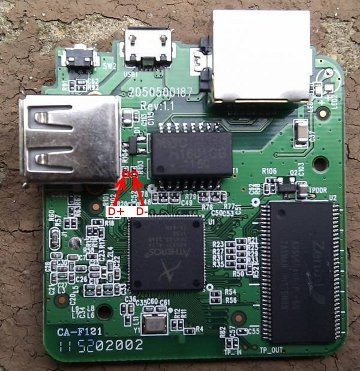

AR933x (WR703N) USB Device Driver
What
It is possible to convert the WR703N router (or any board based on a AR933x SoC) to work as a USB gadget. What this means is that when plugged into a PC it can be recognized as Ethernet, serial or mass storage device (depending on the loaded driver). For example you can use the router as a wireless USB adapter by loading the Ethernet module.
Hardware Changes
In order to use the USB controller in device mode some soldering is required. The first change is to remove resistor R3 which configures the USB mode at boot time. If it is pulled up the USB is initialized in host mode. If pulled down the USB is initialized in device mode. Removing the resistor is good enough (at least on my setup), there is no need to explicitly pull down the pin. Be very careful while unsoldering the resistor since the nearby resistors are crucial to the boot sequence. For example R2 tells the processor to boot from flash. Optinally a switch can be connected to the pin so you can select which mode to use.
 WR703N back side. Image source: OpenWRT Wiki.
WR703N back side. Image source: OpenWRT Wiki.
The second hardware modification is creating a cable to connect the router with. One option is to split the cable coming from the PC and connect the data lines to the USB A connector while connecting the power lines to the USB Micro-B connector. This way the router can easily be switched back to host mode. The other option is to solder the pins of the Micro-B connector (which are left unconnected) to the USB data lines. Use the R103 and R104 pads which are left unpopulated and are near the connector. This will allow you to use a standard USB cable to the Micro-B connector.
 WR703N front side. Image source: OpenWRT Wiki.
Software Changes
You need to compile your own OpenWRT image customized with a patch which adds support for the USB device mode. Only the trunk version is supported. Here is a quick guide of the commands. For the full version and prerequisites go to the OpenWRT Buildroot page.
Setup the build environment:
sudo apt-get update
sudo apt-get install build-essential subversion libncurses5-dev zlib1g-dev gawk gcc-multilib flex git-core gettext
mkdir openwrt
cd openwrt
svn co svn://svn.openwrt.org/openwrt/trunk/ -r {2013-02-19}
cd trunk
Apply the patch:
wget -qO- https://neykov.name/posts/ar933x-usb-device-driver/ar933x_usb_device_openwrt.patch | patch -p1
Configure:
make menuconfig
select "Target Profile" - "TP-Link WR703N", go to "Kernel Modules"/"USB Support" and select (as modules)
kmod-usb-chipidea
kmod-usb-core
kmod-usb-gadget
kmod-usb-gadget-*
Exit, save and execute
make -j<number of cores>
To upload the new image to the device:
scp bin/ar71xx/openwrt-ar71xx-generic-tl-wr703n-v1-squashfs-sysupgrade.bin root@<router ip address>:/tmp
ssh root@<router ip address> sysupgrade -v /tmp/openwrt-ar71xx-generic-tl-wr703n-v1-squashfs-sysupgrade.bin
Wait for the reboot. Now you can use one of g_ether, g_serial, g_mass_storage, g_multi, g_cdc, g_acm_ms drivers.
Ethernet example:
insmod g_ether
ifconfig usb0 169.254.64.80
Now you can access the router at address 169.254.64.80 (this is link-local address so no need to configure the PC).
Serial example:
insmod g_serial
echo 'ttyGS0::askfirst:/bin/ash --login' >> /etc/inittab
kill -HUP 1 #reloads inittab
Connect to the newly detected serial port and press enter in the blank screen.
Mass Storage:
dd if=/dev/zero of=/tmp/mass_storage.img bs=1M count=10
insmod g_mass_storage file=/tmp/mass_storage.img removable=1 cdrom=0
In windows this will pop format dialog since the image is not initialized.
If you need a module to be loaded at startup add it on a new line in /etc/modules.d/22-usb-chipidea file.
References
During development the board schematic proved invaluable multiple times. Special thanks to Squonk42 for creating it.